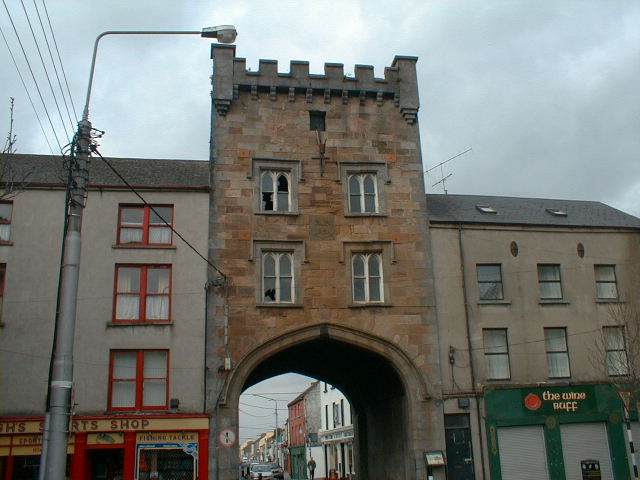
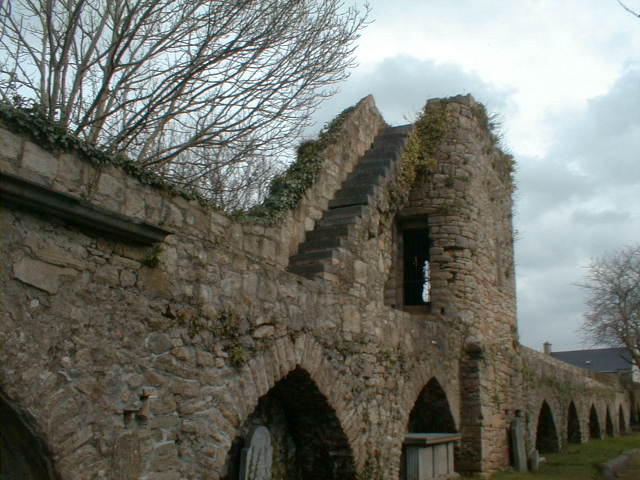

The West Gate
The building that presently stands on the site of the West Gate was built in 1831 by a merchant named Joyce. Before 1831 there is little or no documented history on the West Gate
When it was rebuilt in 1831 the ruins of the former West Gate were destroyed and the stones were taken away to build farm walls etc. It is belived that under the very wealthy merchant Mr. Joyce the present building of today stands. It is believed that he built the West Gate as a town house for himself. But in 1894 after the death of this Mr. Joyce, his family had no real connections with the town so the West Gate was allowed to fall into disuse.
In 1978 the West Gate was purchased by a group of local businessmen and in 1979, a local pirate radio station was set up, broadcasting from the West Gate.This was closed down in 1986 under new radio and broadcasting laws. Since then the West Gate has remained unoccupied. The interior of the building seems to be unsafe and access to the General Public is prohibited.

The town walls were built in the 14th Century under Otho de Grandison, the High Sheriff and the first Lord Major of Clonmel. The walls enclosed a square roughly 320m N-S by 412m E-W, bounded on the south by the River Suir. The first murage grant or wall building grant was sanctioned in 1298 and more followed in 1316, 1335 and 1364. These walls were built at a graet cost to the local people but proved valuble in 1650, when Oliver Cromwell and his parliamentarian forces besieged the town. He had already taken Cahir, Cashel and Fethrd inside a week but met his greatest opposition in Clonmel where he lost about two thousand men.
He attacked from the North side of the town and hit with a cannon but Hugh Dubh O' Neill put up defence walls. Two perpendicular to the main walls on either side of the section under bombardment and one parallel to the main wall joined these to form a dead end. O' Neill's men successfully attacked the besiegers from the top of the wall but Cromwell finally breached the town walls.
The only remaining section of these town walls is by Old St. Mary's Church. This section was restored and renovated by the Corporation in 1980 and was railed off in 1987 to provide a walkway for the public in the consecrated churchyard.
